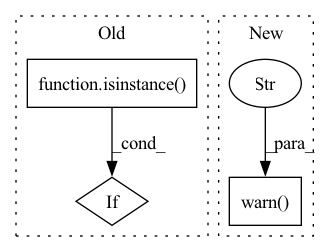

Pattern ID :23905
Before Change
permutation_kwargs["random_state"] = permutation_kwargs.get("random_state") or 42
validation.validate_model(dataset, model)
if isinstance( dataset, base.Dataset) and force_permutation is True:
return _calc_permutation_importance(model, dataset, **permutation_kwargs).fillna(0), "permutation_importance"
// Get the actual model in case of pipelineAfter Change
if importance is None and permutation_failure is None and isinstance(dataset, base.Dataset):
importance = _calc_permutation_importance(model, dataset, **permutation_kwargs)
calc_type = "permutation_importance"
warnings.warn("Could not find built-in feature importance on the model, using "
"permutation feature importance calculation" )
// If after all importance is still none raise error
if importance is None:
// FIXME: better messageIn pattern: SUPERPATTERN
Frequency: 3
Non-data size: 3
Instances Fragment ID: 74418111
Project Name: deepchecks/deepchecks
Commit Name: eb147ecbbdc94fe3a194b496b469be0760ca72e6
Time: 2022-01-26
Author: matan@deepchecks.com
File Name: deepchecks/utils/features.py
M Class Name: AnonimousClass
N Class Name: AnonimousClass
M Method Name: calculate_feature_importance(4)
N Method Name: calculate_feature_importance(4)
M Parent Class:
N Parent Class:
M File Name: deepchecks/utils/features.py
N File Name: deepchecks/utils/features.py
M Start Line: 147
M End Line: 161
N Start Line: 146
N End Line: 181
Before Change
output_names = None
if isinstance(out, Tensor):
output_names = ["output"]
elif isinstance( out, Iterable) :
output_names = [
"output_{}".format(index) for index, _ in enumerate(iter(out))
]After Change
if isinstance(sample_batch, Dict) and not isinstance(
sample_batch, collections.OrderedDict
):
warnings.warn(
"Sample inputs passed into the ONNX exporter should be in "
"the same order defined in the model forward function. "
"Consider using OrderedDict for this purpose." ,
UserWarning,
)
sample_batch = tensors_to_device(sample_batch, "cpu")
onnx_path = os.path.join(self._output_dir, name)
create_parent_dirs(onnx_path) Fragment ID: 74418108
Project Name: neuralmagic/sparseml
Commit Name: 1f45a58f910904b5a9188cc634f6a8e96c461d0d
Time: 2021-07-16
Author: tuan@neuralmagic.com
File Name: src/sparseml/pytorch/utils/exporter.py
M Class Name: ModuleExporter
N Class Name: ModuleExporter
M Method Name: export_onnx(6)
N Method Name: export_onnx(6)
M Parent Class: object
N Parent Class: object
M File Name: src/sparseml/pytorch/utils/exporter.py
N File Name: src/sparseml/pytorch/utils/exporter.py
M Start Line: 195
M End Line: 211
N Start Line: 201
N End Line: 233
Before Change
if isinstance(X_test, int) and freq is not None:
future = self._model.make_future_dataframe(periods=X_test, freq=freq)
forecast = self._model.predict(future)
elif isinstance( X_test, pd.DataFrame) :
forecast = self._model.predict(X_test)
else:
raise ValueError(
After Change
forecast = self._model.predict(X_test)
return forecast["yhat"]
else:
warnings.warn(
"Estimator is not fit yet. Please run fit() before predict()." )
return np.ones(X_test.shape[0])
Fragment ID: 74418114
Project Name: microsoft/flaml
Commit Name: 6ab0730793f42ff5bb7f53b3a9d43d640e597189
Time: 2021-09-01
Author: wang.chi@microsoft.com
File Name: flaml/model.py
M Class Name: FBProphet
N Class Name: FBProphet
M Method Name: predict(2)
N Method Name: predict(3)
M Parent Class: BaseEstimator
N Parent Class: BaseEstimator
M File Name: flaml/model.py
N File Name: flaml/model.py
M Start Line: 886
M End Line: 897
N Start Line: 915
N End Line: 924